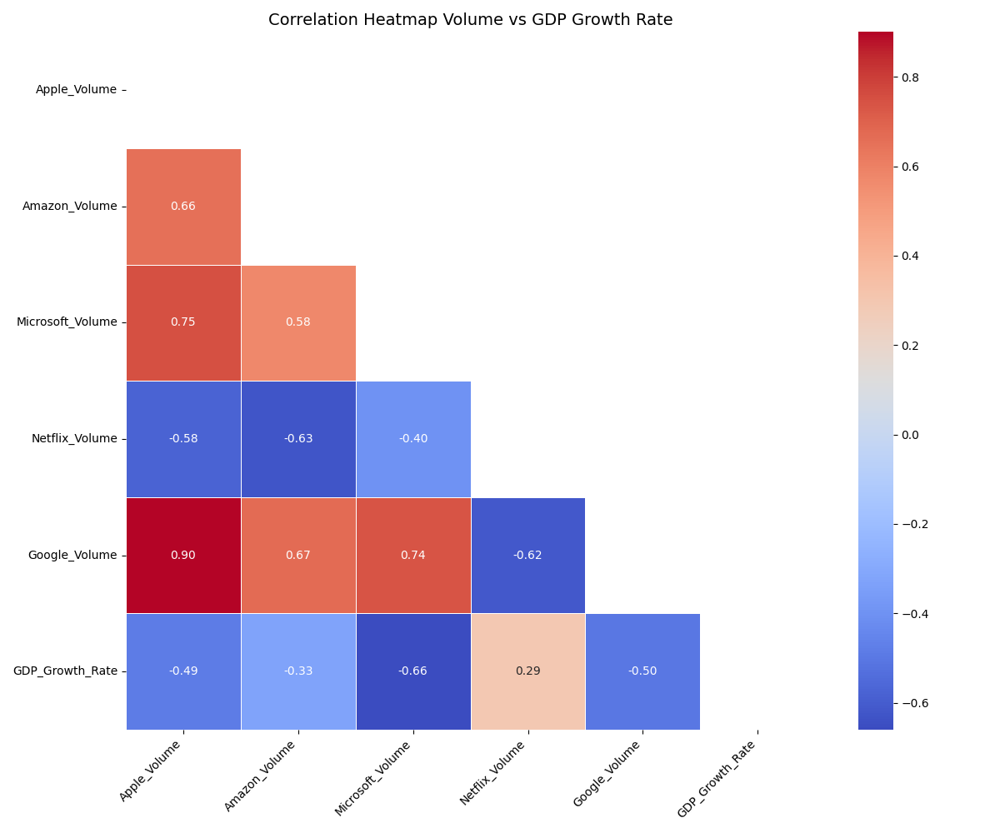

Google Stock Data and GDP Growth Rate Correlation
This heatmap illustrates the correlations between the trading volumes of major tech companies (Apple, Amazon, Microsoft, Netflix, and Google) and GDP growth rate. There is a strong positive correlation between Apple and Google volumes (0.90) and Microsoft and Google volumes (0.74), indicating synchronized trading activity among these companies, showcasing shared market trends. Conversely, Netflix trading volume shows negative correlations with Apple (-0.58), Amazon (-0.63), and Microsoft (-0.40), suggesting that Netflix's trading activity may respond to differeing market forces compared to other tech firms. The GDP growth rate exhibits negative correlations with Apple (-0.49), Microsoft (-0.33), and Netflix volumes (-0.66), demonstrating that the higher economic growth may be associated with reduced trading activity in these companies, possibly reflecting a shift in investor focus from active trading to holding positions during stable economic periods. Meanwhile, Google volume shows a slight positive correlation (0.29) with GDP growth, contrasting with the others.